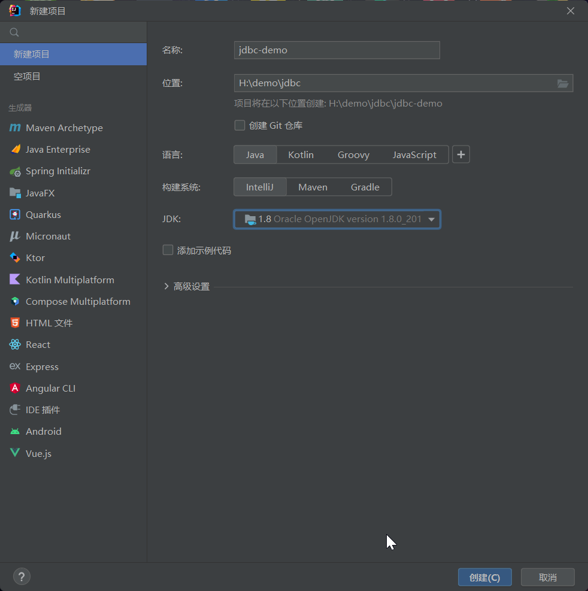
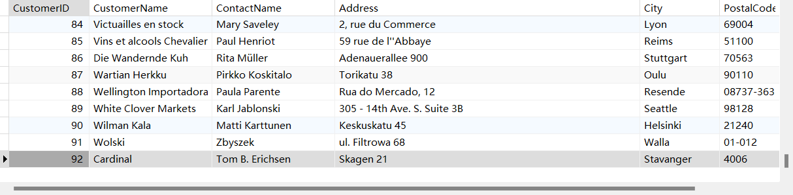
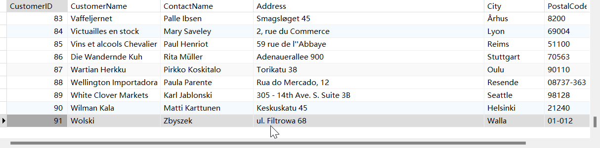
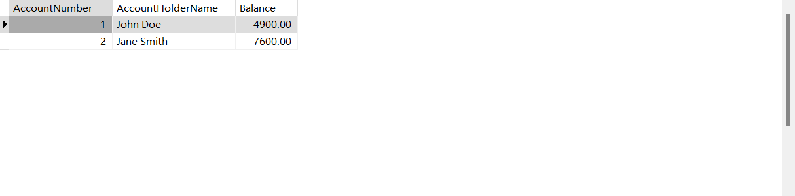
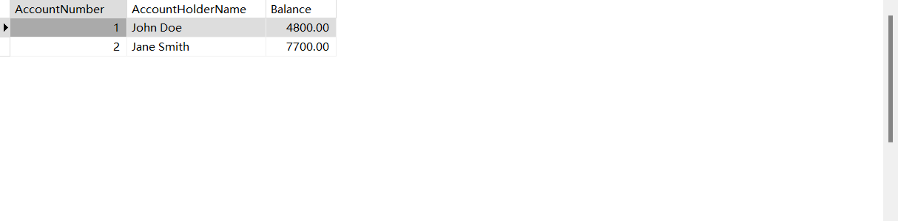
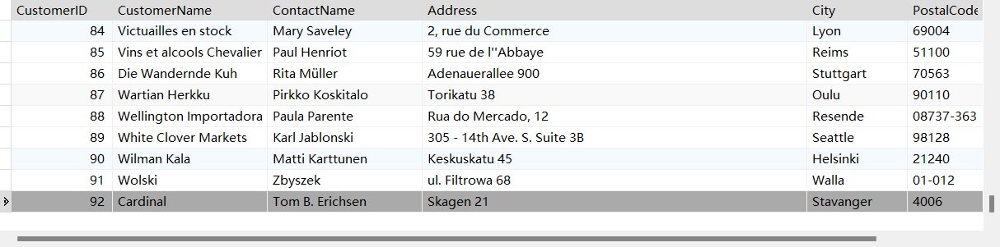

JDK 8 + MySQL 8 简易演示
JDBC \text {JDBC} JDBC Java Database Connectivity \text {Java Database Connectivity} Java Database Connectivity Java API \text {Java API} Java API Java \text {Java} Java Java \text {Java} Java JDBC \text {JDBC} JDBC Java \text {Java} Java

加载 JDBC \text {JDBC} JDBC
1 Class.forName("com.mysql.cj.jdbc.Driver" );
创建连接
1⃣ getConnection(String url)
1 2 String url = "jdbc:mysql://localhost:3306/myDatabase?user=myUsername&myPassword" ;Connection conn = DriverManager.getConnection(url);
2⃣ getConnection(String url, Properties info)
1 2 3 4 5 String url = "jdbc:mysql://localhost:3306/myDatabase" ;Properties props = new Properties ();props.setProperty("user" , "myUsername" ); props.setProperty("password" , "myPassword" ); Connection conn = DriverManager.getConnection(url, props);
3⃣ getConnection(String url, String user, String password)
1 2 3 4 String url = "jdbc:mysql://localhost:3306/myDatabase" ;String user = "myUsername" ;String password = "myPassword" ;Connection conn = DriverManager.getConnection(url, user, password);
创建 Statement \text {Statement} Statement
1 Statement stmt = connection.createStatement();
执行 SQL \text {SQL} SQL
executeQuery(String sql)：执行返回单个 ResultSet 对象的 SQL \text {SQL} SQL SELECT \text {SELECT} SELECT executeUpdate(String sql)：用于执行 INSERT \text {INSERT} INSERT UPDATE \text {UPDATE} UPDATE DELETE \text {DELETE} DELETE SQL \text {SQL} SQL execute(String sql)：可用于执行任意的 SQL \text {SQL} SQL ResultSet 对象还是更新计数。
1 2 String sql = "SELECT * FROM Customers;"; ResultSet rs = stmt.executeQuery(sql );
处理结果
1 2 3 4 5 while (rs.next()) { String customerId = rs.getString("CustomerID" ); String companyName = rs.getString("CompanyName" ); System.out.println("Customer ID: " + customerId + ", Company Name: " + companyName); }
关闭资源
1 2 3 rs.close(); stmt.close(); conn.close();
⭐ NorthwindCustomers.java \text {NorthwindCustomers.java} NorthwindCustomers.java
1 2 3 4 5 6 7 8 9 10 11 12 13 14 15 16 17 18 19 20 21 22 23 24 25 26 27 28 29 30 31 import java.sql.* ; public class NorthwindCustomers { public static void main(String[] args) throws ClassNotFoundException, SQLException { / / 1. 加载 JDBC 驱动 Class.forName("com.mysql.cj.jdbc.Driver"); / / 2. 创建连接 String url = "jdbc:mysql://localhost:3306/northwind?user=root&password=root"; Connection conn = DriverManager.getConnection(url); / / 3. 创建 Statement Statement stmt = conn.createStatement(); / / 4. 执行 SQL String sql = "SELECT * FROM Customers;"; ResultSet rs = stmt.executeQuery(sql ); / / 5. 处理结果 while (rs.next()) { String customerId = rs.getString("CustomerID"); String customerName = rs.getString("CustomerName"); System.out.println("Customer ID: " + customerId + ", CustomerName: " + customerName); } / / 6. 关闭资源 rs.close(); stmt.close(); conn.close(); } }
Customer ID: 1, CustomerName: Alfreds Futterkiste
…
Statement vs PreparedStatement
加载 JDBC \text {JDBC} JDBC
同上 ⬆
创建连接
同上 ⬆
创建 PreparedStatement 对象
指定一个SQL \text {SQL} SQL ?）。
1 2 String sql = "SELECT * FROM Customers WHERE Country = ?;" ;PreparedStatement pstmt = conn.prepareStatement(sql);
设置 SQL \text {SQL} SQL
方法
描述
数据类型示例
setInt设置 int 类型的参数值
int
setLong设置 long 类型的参数值
long
setDouble设置 double 类型的参数值
double
setFloat设置 float 类型的参数值
float
setShort设置 short 类型的参数值
short
setByte设置 byte 类型的参数值
byte
setBoolean设置 boolean 类型的参数值
boolean
setString设置 String 类型的参数值
String
setDate设置 java.sql.Date 类型的参数值
java.sql.Date
setTime设置 java.sql.Time 类型的参数值
java.sql.Time
setTimestamp设置 java.sql.Timestamp 类型的参数值
java.sql.Timestamp
setObject设置任意类型的参数值
Object
setNull设置参数值为 SQL NULL
-
setBlob设置 java.sql.Blob 类型的参数值
java.sql.Blob
setClob设置 java.sql.Clob 类型的参数值
java.sql.Clob
setArray设置 java.sql.Array 类型的参数值
java.sql.Array
setBinaryStream设置二进制流作为参数值
InputStream (二进制流)
setCharacterStream设置字符流作为参数值
Reader (字符流)
setAsciiStream设置 ASCII 流作为参数值
InputStream (ASCII 流)
1 pstmt.setString(1 , "Germany" );
执行 SQL \text {SQL} SQL
1 ResultSet rs = pstmt.executeQuery();
处理结果
1 2 3 4 5 while (rs.next()) { String customerId = rs.getString("CustomerID" ); String customerName = rs.getString("CustomerName" ); System.out.println("Customer ID: " + customerId + ", CustomerName: " + customerName); }
关闭资源
1 2 3 rs.close(); pstmt.close(); conn.close();
⭐ NorthwindCustomersPreparedStatement.java \text {NorthwindCustomersPreparedStatement.java} NorthwindCustomersPreparedStatement.java
1 2 3 4 5 6 7 8 9 10 11 12 13 14 15 16 17 18 19 20 21 22 23 24 25 26 27 28 29 30 31 32 33 34 import java.sql.*;public class NorthwindCustomersPreparedStatement { public static void main (String[] args) throws ClassNotFoundException, SQLException { Class.forName("com.mysql.cj.jdbc.Driver" ); String url = "jdbc:mysql://localhost:3306/northwind?user=root&password=root" ; Connection conn = DriverManager.getConnection(url); String sql = "SELECT * FROM Customers WHERE Country = ?;" ; PreparedStatement pstmt = conn.prepareStatement(sql); pstmt.setString(1 , "Germany" ); ResultSet rs = pstmt.executeQuery(); while (rs.next()) { String customerId = rs.getString("CustomerID" ); String customerName = rs.getString("CustomerName" ); System.out.println("Customer ID: " + customerId + ", CustomerName: " + customerName); } rs.close(); pstmt.close(); conn.close(); } }
Customer ID: 1, CustomerName: Alfreds Futterkiste
CRUD
🌟 Customer.java \text {Customer.java} Customer.java
1 2 3 4 5 6 7 8 9 10 11 12 13 14 15 16 17 18 19 20 21 22 23 24 25 26 27 28 29 30 31 32 33 public class Customer { private String customerName; private String contactName; private String address; private String city; private String postalCode; private String country; public Customer (String customerName, String contactName, String address, String city, String postalCode, String country) { this .customerName = customerName; this .contactName = contactName; this .address = address; this .city = city; this .postalCode = postalCode; this .country = country; } @Override public String toString () { return "Customer{" + "customerName='" + customerName + '\'' + ", contactName='" + contactName + '\'' + ", address='" + address + '\'' + ", city='" + city + '\'' + ", postalCode='" + postalCode + '\'' + ", country='" + country + '\'' + '}' ; } }
⭐ NorthwindCustomersPreparedStatementCRUD.java \text {NorthwindCustomersPreparedStatementCRUD.java} NorthwindCustomersPreparedStatementCRUD.java
1 2 3 4 5 6 7 private static final String URL = "jdbc:mysql://localhost:3306/northwind" ;private static final String USERNAME = "root" ;private static final String PASSWORD = "root" ;private Connection getConnection () throws SQLException { return DriverManager.getConnection(URL, USERNAME, PASSWORD); }
Insert \text {Insert} Insert
1 2 3 4 5 6 7 8 9 10 11 12 13 14 15 16 @Test public void testInsert () { String sql = "INSERT INTO Customers (CustomerName, ContactName, Address, City,PostalCode, Country) VALUES (?, ?, ?, ?, ?, ?)" ; try (Connection conn = getConnection(); PreparedStatement pstmt = conn.prepareStatement(sql)) { pstmt.setString(1 , "Cardinal" ); pstmt.setString(2 , "Tom B. Erichsen" ); pstmt.setString(3 , "Skagen 21" ); pstmt.setString(4 , "Stavanger" ); pstmt.setString(5 , "4006" ); pstmt.setString(6 , "Norway" ); pstmt.executeUpdate(); } catch (SQLException e) { e.printStackTrace(); } }

Update \text {Update} Update
1 2 3 4 5 6 7 8 9 10 11 12 13 @Test public void testUpdate () { String sql = "UPDATE Customers SET ContactName = ?, City = ? WHERE CustomerID = ?" ; try (Connection conn = getConnection(); PreparedStatement pstmt = conn.prepareStatement(sql)) { pstmt.setString(1 , "Alfred Schmidt" ); pstmt.setString(2 , "Frankfurt" ); pstmt.setInt(3 , 92 ); pstmt.executeUpdate(); } catch (SQLException e) { e.printStackTrace(); } }
Delete \text {Delete} Delete
1 2 3 4 5 6 7 8 9 10 11 @Test public void testDelete () { String sql = "DELETE FROM Customers WHERE CustomerName= ?" ; try (Connection conn = getConnection(); PreparedStatement pstmt = conn.prepareStatement(sql)) { pstmt.setString(1 , "Cardinal" ); pstmt.executeUpdate(); } catch (SQLException e) { e.printStackTrace(); } }

SelectALL \text {SelectALL} SelectALL
1 2 3 4 5 6 7 8 9 10 11 12 13 14 15 16 17 18 19 20 21 @Test public void testSelect () { List<Customer> customers = new ArrayList <>(); String sql = "SELECT CustomerName, ContactName, Address, City, PostalCode, Country FROM Customers" ; try (Connection conn = getConnection(); PreparedStatement pstmt = conn.prepareStatement(sql); ResultSet rs = pstmt.executeQuery()) { while (rs.next()) { Customer customer = new Customer ( rs.getString("CustomerName" ), rs.getString("ContactName" ), rs.getString("Address" ), rs.getString("City" ), rs.getString("PostalCode" ), rs.getString("Country" ) ); customers.add(customer); } customers.forEach(System.out::println); } catch (SQLException e) { e.printStackTrace(); } }
Customer{customerName=‘Alfreds Futterkiste’, contactName=‘Maria Anders’, address=‘Obere Str. 57’, city=‘Berlin’, postalCode=‘12209’, country=‘Germany’}
主键回显
在 JDBC \text {JDBC} JDBC PreparedStatement 的 getGeneratedKeys() 方法。为了使 getGeneratedKeys() 方法有效，需要在创建 PreparedStatement 对象时指定 Statement.RETURN_GENERATED_KEYS 作为参数。
1 2 3 4 5 6 7 8 9 10 11 12 13 14 15 16 17 18 19 20 21 22 23 24 25 @Test public void testInsertAndGetKey () { String sql = "INSERT INTO Customers (CustomerName, ContactName, Address, City, PostalCode, Country) VALUES (?, ?, ?, ?, ?, ?)" ; try (Connection conn = getConnection(); PreparedStatement pstmt = conn.prepareStatement(sql, Statement.RETURN_GENERATED_KEYS)) { pstmt.setString(1 , "Cardinal" ); pstmt.setString(2 , "Tom B. Erichsen" ); pstmt.setString(3 , "Skagen 21" ); pstmt.setString(4 , "Stavanger" ); pstmt.setString(5 , "4006" ); pstmt.setString(6 , "Norway" ); int affectedRows = pstmt.executeUpdate(); if (affectedRows > 0 ) { try (ResultSet generatedKeys = pstmt.getGeneratedKeys()) { if (generatedKeys.next()) { int generatedKey = generatedKeys.getInt(1 ); System.out.println("Inserted record's ID: " + generatedKey); } else { throw new SQLException ("Creating user failed, no ID obtained." ); } } } } catch (SQLException e) { e.printStackTrace(); } }
批量插入
在 JDBC \text {JDBC} JDBC PreparedStatement 的批处理能力，这通常通过 addBatch() 和 executeBatch() 方法实现。这种方法可以显著提高大量插入操作的效率，因为减少了与数据库的通信次数。
1 2 3 4 5 6 7 8 9 10 11 12 13 14 15 16 17 18 19 20 21 22 23 24 25 26 27 @Test public void testBatchInsert () { String sql = "INSERT INTO Customers (CustomerName, ContactName, Address, City, PostalCode, Country) VALUES (?, ?, ?, ?, ?, ?)" ; try (Connection conn = getConnection(); PreparedStatement pstmt = conn.prepareStatement(sql)) { List<Customer> customers = Arrays.asList( new Customer ("Customer1" , "Contact1" , "Address1" , "City1" , "PostalCode1" , "Country1" ), new Customer ("Customer2" , "Contact2" , "Address2" , "City2" , "PostalCode2" , "Country2" ), new Customer ("Customer99" , "Contact99" , "Address99" , "City99" , "PostalCode99" , "Country99" ) ); for (Customer customer : customers) { pstmt.setString(1 , customer.getCustomerName()); pstmt.setString(2 , customer.getContactName()); pstmt.setString(3 , customer.getAddress()); pstmt.setString(4 , customer.getCity()); pstmt.setString(5 , customer.getPostalCode()); pstmt.setString(6 , customer.getCountry()); pstmt.addBatch(); } int [] affectedRecords = pstmt.executeBatch(); for (int affectedRecord : affectedRecords) { System.out.println("Affected records: " + affectedRecord); } } catch (SQLException e) { e.printStackTrace(); } }
事务实现
1 2 3 4 5 6 7 8 9 10 11 12 CREATE DATABASE BankDatabase;USE BankDatabase; CREATE TABLE BankAccount ( AccountNumber INT AUTO_INCREMENT PRIMARY KEY, AccountHolderName VARCHAR (100 ), Balance DECIMAL (10 , 2 ) ); INSERT INTO BankAccount (AccountHolderName, Balance)VALUES ('John Doe' , 5000.00 ),('Jane Smith' , 7500.00 );
🌟 BankAccouont.java \text {BankAccouont.java} BankAccouont.java
1 2 3 4 5 6 7 8 9 10 11 12 13 14 15 16 17 18 19 20 21 22 23 24 25 26 27 public class BankAccount { private String accountHolderName; private double balance; public BankAccount (String accountHolderName, double balance) { this .accountHolderName = accountHolderName; this .balance = balance; } public String getAccountHolderName () { return accountHolderName; } public void setAccountHolderName (String accountHolderName) { this .accountHolderName = accountHolderName; } public double getBalance () { return balance; } public void setBalance (double balance) { this .balance = balance; } }
BankAccountDAO.java \text {BankAccountDAO.java} BankAccountDAO.java
1 2 3 4 5 6 7 8 9 10 11 12 13 14 15 16 17 18 19 20 21 22 23 24 25 26 27 28 29 30 31 32 33 34 35 36 37 38 39 40 41 42 43 44 45 46 47 48 49 50 51 52 53 54 55 56 57 58 59 60 61 62 63 64 65 66 67 68 69 70 71 72 73 74 75 import java.sql.Connection;import java.sql.PreparedStatement;import java.sql.SQLException;public class BankAccountDAO { private Connection connection; public Connection getConnection () { return connection; } public void setConnection (Connection connection) { this .connection = connection; } public boolean decreaseBalance (int accountNumber, double amount) { PreparedStatement pstmt = null ; try { String sql = "UPDATE BankAccount SET balance = balance - ? WHERE accountNumber = ?" ; pstmt = connection.prepareStatement(sql); pstmt.setDouble(1 , amount); pstmt.setInt(2 , accountNumber); int rowsUpdated = pstmt.executeUpdate(); return rowsUpdated > 0 ; } catch (SQLException e) { e.printStackTrace(); return false ; } finally { if (pstmt != null ) { try { pstmt.close(); } catch (SQLException e) { e.printStackTrace(); } } } } public boolean increaseBalance (int accountNumber, double amount) { PreparedStatement pstmt = null ; try { String sql = "UPDATE BankAccount SET balance = balance + ? WHERE accountNumber = ?" ; pstmt = connection.prepareStatement(sql); pstmt.setDouble(1 , amount); pstmt.setInt(2 , accountNumber); int rowsUpdated = pstmt.executeUpdate(); return rowsUpdated > 0 ; } catch (SQLException e) { e.printStackTrace(); return false ; } finally { if (pstmt != null ) { try { pstmt.close(); } catch (SQLException e) { e.printStackTrace(); } } } } }
DEMO:BankAccountService.java \text {DEMO:BankAccountService.java} DEMO:BankAccountService.java
1 2 3 4 5 6 7 8 9 10 11 12 13 14 15 16 17 18 19 20 21 22 23 24 25 26 27 28 29 30 31 32 33 34 35 36 37 38 39 40 41 42 43 44 45 46 47 48 49 50 51 import java.sql.Connection;import java.sql.DriverManager;import java.sql.SQLException;public class BankAccountService { private BankAccountDAO bankAccountDAO; public BankAccountService (BankAccountDAO bankAccountDAO) { this .bankAccountDAO = bankAccountDAO; } public boolean transferMoney (int fromAccountNumber, int toAccountNumber, double amount) { Connection connection = null ; boolean transferSuccess = false ; try { Class.forName("com.mysql.cj.jdbc.Driver" ); connection = DriverManager.getConnection("jdbc:mysql://localhost:3306/BankDatabase" , "root" , "root" ); connection.setAutoCommit(false ); bankAccountDAO.setConnection(connection); bankAccountDAO.decreaseBalance(fromAccountNumber, amount); bankAccountDAO.increaseBalance(toAccountNumber, amount); connection.commit(); transferSuccess = true ; } catch (Exception e) { if (connection != null ) { try { connection.rollback(); } catch (SQLException ex) { ex.printStackTrace(); } } e.printStackTrace(); } finally { if (connection != null ) { try { connection.close(); } catch (SQLException e) { e.printStackTrace(); } } } return transferSuccess; } }
BankAccountMain.java \text {BankAccountMain.java} BankAccountMain.java
1 2 3 4 5 6 7 8 9 10 11 12 13 14 15 16 17 18 19 public class BankAccountMain { public static void main (String[] args) { int fromAccountNumber = 1 ; int toAccountNumber = 2 ; double amount = 100.00 ; BankAccountDAO bankAccountDAO = new BankAccountDAO (); BankAccountService bankAccountService = new BankAccountService (bankAccountDAO); boolean isSuccess = bankAccountService.transferMoney(fromAccountNumber, toAccountNumber, amount); if (isSuccess) { System.out.println("转账成功！" ); } else { System.out.println("转账失败！" ); } } }
转账成功！

Druid
Utils.java \text {Utils.java} Utils.java
1 2 3 4 5 6 7 8 9 10 11 12 13 14 15 16 17 18 19 20 21 22 23 24 25 26 27 28 29 30 31 32 33 34 35 36 37 38 39 40 41 42 43 44 45 46 47 48 49 50 51 52 53 54 55 56 57 58 59 60 61 62 63 64 65 66 67 68 69 70 71 72 73 74 75 import com.alibaba.druid.pool.DruidDataSource;import com.alibaba.druid.pool.DruidDataSourceFactory;import javax.sql.DataSource;import java.io.FileInputStream;import java.io.IOException;import java.io.InputStream;import java.sql.Connection;import java.sql.SQLException;import java.util.Properties;public class Utils { private static DataSource dataSource = null ; private static ThreadLocal<Connection> tl = new ThreadLocal <>(); static { Properties properties = new Properties (); InputStream fis = Utils.class.getClassLoader().getResourceAsStream("druid.properties" ); try { properties.load(fis); } catch (IOException e) { e.printStackTrace(); } try { dataSource = DruidDataSourceFactory.createDataSource(properties); } catch (Exception e) { throw new RuntimeException (e); } try { fis.close(); } catch (IOException e) { throw new RuntimeException (e); } } public static Connection getConnection () { Connection connection = tl.get(); if (connection == null ) { try { connection = dataSource.getConnection(); tl.set(connection); } catch (SQLException e) { e.printStackTrace(); } } return connection; } public static void freeConnection () { Connection connection = tl.get(); if (connection != null ) { try { connection.setAutoCommit(true ); connection.close(); } catch (SQLException e) { e.printStackTrace(); } finally { tl.remove(); } } } }
BankAccountDAODruid.java \text {BankAccountDAODruid.java} BankAccountDAODruid.java
1 2 3 4 5 6 7 8 9 10 11 12 13 14 15 16 17 18 19 20 21 22 23 24 25 26 27 28 29 30 31 32 33 34 35 36 37 38 39 40 41 42 43 44 45 46 47 48 49 50 51 52 53 54 55 56 57 58 59 60 61 62 63 64 65 66 67 68 import java.sql.Connection;import java.sql.PreparedStatement;import java.sql.SQLException;public class BankAccountDAODruid { public boolean decreaseBalance (int accountNumber, double amount) { Connection connection = Utils.getConnection(); PreparedStatement pstmt = null ; try { String sql = "UPDATE BankAccount SET balance = balance - ? WHERE accountNumber = ?" ; pstmt = connection.prepareStatement(sql); pstmt.setDouble(1 , amount); pstmt.setInt(2 , accountNumber); int rowsUpdated = pstmt.executeUpdate(); return rowsUpdated > 0 ; } catch (SQLException e) { e.printStackTrace(); return false ; } finally { if (pstmt != null ) { try { pstmt.close(); } catch (SQLException e) { e.printStackTrace(); } } } } public boolean increaseBalance (int accountNumber, double amount) { Connection connection = Utils.getConnection(); PreparedStatement pstmt = null ; try { String sql = "UPDATE BankAccount SET balance = balance + ? WHERE accountNumber = ?" ; pstmt = connection.prepareStatement(sql); pstmt.setDouble(1 , amount); pstmt.setInt(2 , accountNumber); int rowsUpdated = pstmt.executeUpdate(); return rowsUpdated > 0 ; } catch (SQLException e) { e.printStackTrace(); return false ; } finally { if (pstmt != null ) { try { pstmt.close(); } catch (SQLException e) { e.printStackTrace(); } } } } }
BankAccountServiceDruid.java \text {BankAccountServiceDruid.java} BankAccountServiceDruid.java
1 2 3 4 5 6 7 8 9 10 11 12 13 14 15 16 17 18 19 20 21 22 23 24 25 26 27 28 29 30 31 32 33 34 35 36 37 38 39 40 41 42 43 44 45 46 47 48 49 import java.sql.Connection;import java.sql.DriverManager;import java.sql.SQLException;public class BankAccountServiceDruid { private BankAccountDAODruid bankAccountDAODruid; public BankAccountServiceDruid (BankAccountDAODruid bankAccountDAODruid) { this .bankAccountDAODruid = bankAccountDAODruid; } public boolean transferMoney (int fromAccountNumber, int toAccountNumber, double amount) { Connection connection = Utils.getConnection(); boolean transferSuccess = false ; try { connection.setAutoCommit(false ); bankAccountDAODruid.decreaseBalance(fromAccountNumber, amount); bankAccountDAODruid.increaseBalance(toAccountNumber, amount); connection.commit(); transferSuccess = true ; } catch (Exception e) { if (connection != null ) { try { connection.rollback(); } catch (SQLException ex) { ex.printStackTrace(); } } e.printStackTrace(); } finally { if (connection != null ) { try { connection.close(); } catch (SQLException e) { e.printStackTrace(); } } } return transferSuccess; } }
BankAccountMainDruid.java \text {BankAccountMainDruid.java} BankAccountMainDruid.java
1 2 3 4 5 6 7 8 9 10 11 12 13 14 15 16 17 18 19 20 public class BankAccountMainDruid { public static void main (String[] args) { int fromAccountNumber = 1 ; int toAccountNumber = 2 ; double amount = 100.00 ; BankAccountDAODruid bankAccountDAODruid=new BankAccountDAODruid (); BankAccountServiceDruid bankAccountServiceDruid = new BankAccountServiceDruid (bankAccountDAODruid); boolean isSuccess = bankAccountServiceDruid.transferMoney(fromAccountNumber, toAccountNumber, amount); if (isSuccess) { System.out.println("转账成功！" ); } else { System.out.println("转账失败！" ); } } }

BaseDao
BaseDao \text {BaseDao} BaseDao
1 2 3 4 5 6 7 8 9 10 11 12 13 14 15 16 17 18 19 20 21 22 23 24 25 26 27 28 29 30 31 32 33 34 35 36 37 38 39 40 41 42 43 44 45 46 47 48 49 50 51 52 53 54 55 56 57 58 59 60 61 62 63 64 65 66 67 68 69 70 71 72 import java.lang.reflect.Field;import java.sql.*;import java.util.ArrayList;import java.util.List;public class BaseDao { public int executeUpdate (String sql, Object... params) throws SQLException { Connection connection = Utils.getConnection(); PreparedStatement preparedStatement = connection.prepareStatement(sql); if (params != null && params.length != 0 ) { for (int i = 1 ; i <= params.length; i++) { preparedStatement.setObject(i, params[i - 1 ]); } } int rows = preparedStatement.executeUpdate(); preparedStatement.close(); if (connection.getAutoCommit()) { Utils.freeConnection(); } return rows; } public <T> List<T> executeQuery (Class<T> c, String sql, Object... parameters) throws SQLException, IllegalAccessException, InstantiationException, NoSuchFieldException { Connection connection = Utils.getConnection(); PreparedStatement preparedStatement = connection.prepareStatement(sql); if (parameters != null && parameters.length != 0 ) { for (int i = 1 ; i <= parameters.length; i++) { preparedStatement.setObject(i, parameters[i - 1 ]); } } ResultSet resultSet = preparedStatement.executeQuery(); List<T> list = new ArrayList <>(); ResultSetMetaData metaData = resultSet.getMetaData(); int columnCount = metaData.getColumnCount(); while (resultSet.next()) { T t = c.newInstance(); for (int i = 1 ; i <= columnCount; i++) { Object value = resultSet.getObject(i); String columnLabel = metaData.getColumnLabel(i); Field field = c.getDeclaredField(columnLabel); field.setAccessible(true ); field.set(t, value); } list.add(t); } resultSet.close(); preparedStatement.close(); if (connection.getAutoCommit()) { Utils.freeConnection(); } return list; } }
Insert \text {Insert} Insert
1 2 3 4 5 6 7 8 9 10 11 12 13 14 @Test public void testInsert () { String sql = "INSERT INTO Customers (CustomerName, ContactName, Address, City, PostalCode, Country) VALUES (?, ?, ?, ?, ?, ?)" ; try { int rows = executeUpdate(sql, "Cardinal" , "Tom B. Erichsen" , "Skagen 21" , "Stavanger" , "4006" , "Norway" ); if (rows > 0 ) { System.out.println("Insert successful. Rows inserted: " + rows); } else { System.out.println("Insert failed." ); } } catch (SQLException e) { e.printStackTrace(); } }
Insert successful. Rows inserted: 1

Update \text {Update} Update
1 2 3 4 5 6 7 8 9 10 11 12 13 14 @Test public void testUpdate () { String sql = "UPDATE Customers SET ContactName = ?, City = ? WHERE CustomerID = ?" ; try { int rows = executeUpdate(sql, "Alfred Schmidt" , "Frankfurt" , 92 ); if (rows > 0 ) { System.out.println("Update successful. Rows updated: " + rows); } else { System.out.println("Update failed." ); } } catch (SQLException e) { e.printStackTrace(); } }
Update successful. Rows updated: 1
Delete \text {Delete} Delete
1 2 3 4 5 6 7 8 9 10 11 12 13 14 @Test public void testDelete () { String sql = "DELETE FROM Customers WHERE CustomerName= ?" ; try { int rows = executeUpdate(sql, "Cardinal" ); if (rows > 0 ) { System.out.println("Delete successful. Rows deleted: " + rows); } else { System.out.println("Delete failed." ); } } catch (SQLException e) { e.printStackTrace(); } }
Delete successful. Rows deleted: 1
SelectAll \text {SelectAll} SelectAll
1 2 3 4 5 6 7 8 9 10 11 12 13 @Test public void testSelect () { String sql = "SELECT CustomerName AS customerName, ContactName AS contactName, Address AS address, City AS city, PostalCode AS postalCode, Country AS country FROM Customers" ; try { List<Customer> customers = executeQuery(Customer.class, sql); for (Customer customer : customers) { System.out.println(customer); } } catch (SQLException | IllegalAccessException | InstantiationException | NoSuchFieldException e) { e.printStackTrace(); } }
Customer{customerName=‘Alfreds Futterkiste’, contactName=‘Maria Anders’, address=‘Obere Str. 57’, city=‘Berlin’, postalCode=‘12209’, country=‘Germany’}
…